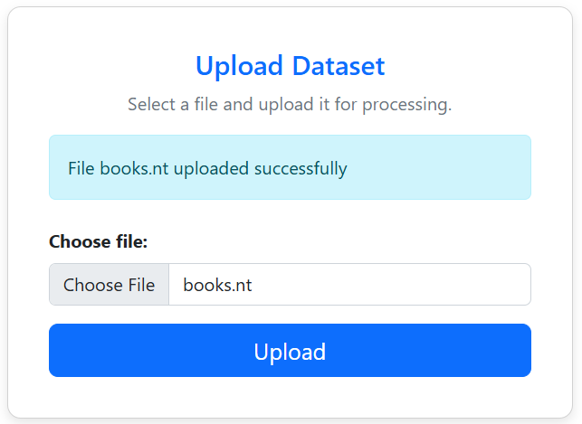
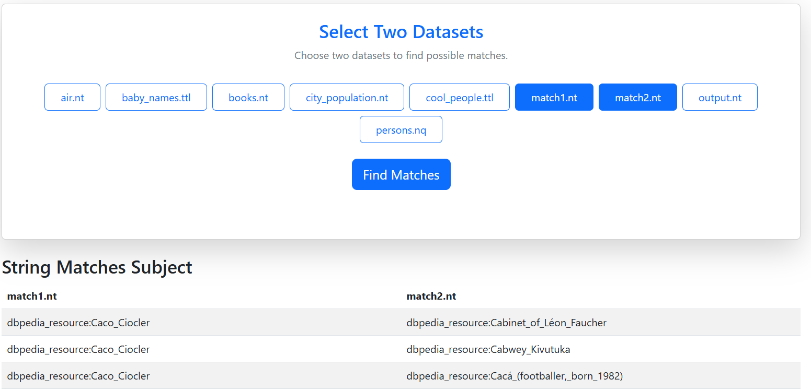
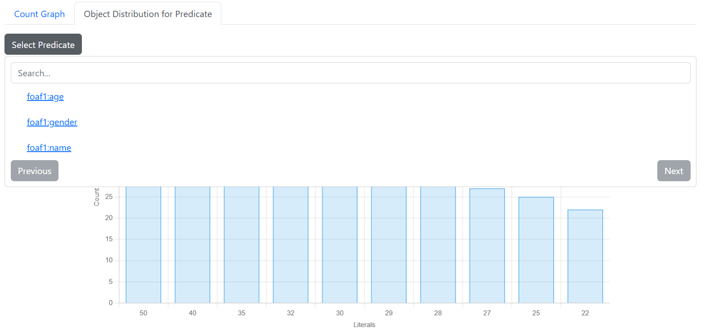
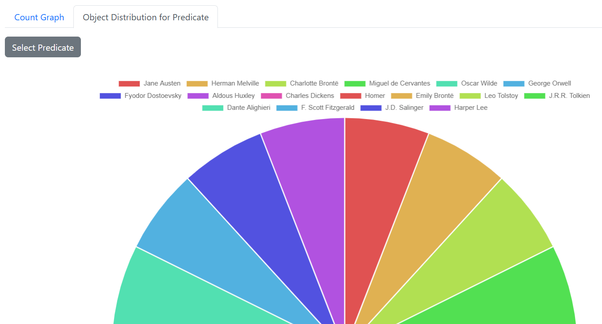

1. Main Page
On the main page, the left sidebar presents the app menu and quick links to the main functionalities.

On the main page, the left sidebar presents the app menu and quick links to the main functionalities.
Choose a dataset file in an allowed format (.ttl, .rdf, .nt, .nq, .jsonld, .trig, .owl, .trdf, .rt, .rpb, .pbrdf, .rj, .trix) and press the upload button. A confirmation message will be displayed upon successful upload.
Select a dataset file and press the download button. You can also search for a specific file by name for easier access.
Select a dataset file and click the 'X' button to delete it from storage. You can also search for a specific file by name for easier access.
A confirmation message will be displayed after success delete.
Select a dataset file and press the button to view the data in a table. You can also search for a specific file by name for easier access.
Select a dataset file and press the button to view the data in a graph. You can also search for a specific file by name for easier access. After selecting a dataset, filtering options become available to refine the visualization. Clicking on nodes displays details, relationships, and statistics related to the selected option. Finally, the processed data can be exported in JSON-LD format or as a PNG image by pressing the dedicated buttons.

Select two datasets and press the button to find matches between subjects, predicates, and objects. DBpedia and Wikidata matches will also be displayed.
Select a dataset file and press the button to view statistics. You can also search for a specific file by name for easier access. First option is to view count statistics by every of the triple types.
Second option is to view object distribution for selected predicate from dataset. Click the button to select a predicate. You can also search for a specific predicate for easier access. The distribution will be displayed as a bar chart for numeric object values,
or by a pie chart for non-numeric object values.
